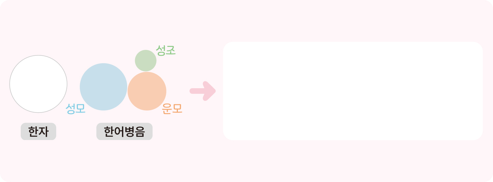
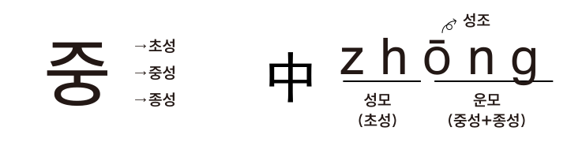

정답
다시 풀기
보충
뜻글자인 한자는 어떻게 읽어야 할까요?

马
mâ
중국 한자는 로마자를 사용한
한어병음
(
汉语拼音
Hànyû Pånyån
)으로
발음을 표기하여 읽습니다.
보충
한중 언어의 구성 요소 비교

•
중:
‘
ㅈ
’
은 초성,
‘
ㅜ
’
는 중성,
‘
ㅇ
’
은 종성이며 한글은 글자 자체가
발음 기호이다.
•
中
zhõng
:
‘
zh
’
는 우리말의 초성에 해당하는 성모이고,
‘
õng
’
는 우리말의 중성, 종성에 해당하는 운모이다.